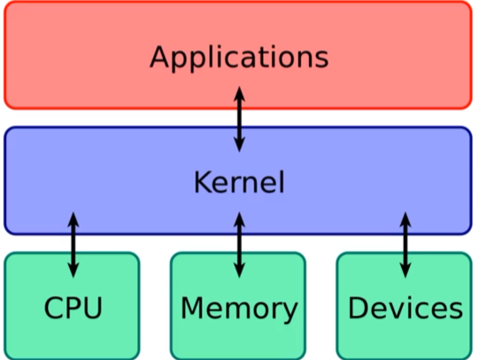

What is a Kernel- - A computer program that controls everything in the system
- - Facilitates interactions between hardware and software components
- - a translator

=================================================
All Kernel exploits:
=================================================
Metasploit- meterpreter> run post/multi/recon/local_exploit_suggester
Take one of those exploits and background session- > use <exploit path>
- > set sessions <session Id>
- > show options (fill other options)